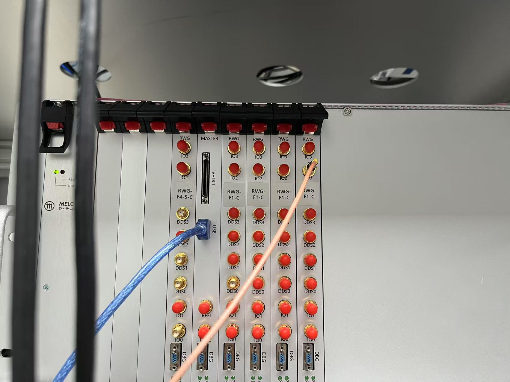

RTMQ 使用文档
1.开机准备
- 检查功放电源是否开启，负载是否正确连接。时序系统开机，检查USB线是否正确连接，如果打开软件后显示序列号不对，可以检查硬件线缆连接。
- 运行emqx：打开RTMQ文件夹，执行emqx.cmd（如果有，没有可以找sjp编写）
- 在终端内运行jupyter_server.cmd
Note
等待浏览器打开jupyter lab界面。如果终端有输出"Exp.ipynb - idle"即为开启成功。最小化终端弹窗和浏览器弹窗，不要关闭。
- 在VScode中打开实验jupyter文件（Exp.ipynb）
内核选择
选择其他内核-现有jupyter服务器-localhost-Python 3 (ipykernel)(py/Exp.ipynb)
- 运行
py/Exp.ipynb中的代码，开始进行实验
406 xyz学姐的台子是在'Main/XYZ.ipynb'中的，不是在Exp.ipynb中的，内核选择也是Main/XYZ.ipynb的内核。
2.代码逻辑介绍
如无特别注释，默认当前文件夹为RTMQ文件夹下的py文件夹，如无特殊需要请勿改动。
2.1 Exp.py
Exp.py（注意不是Exp.ipynb） 是时序的代码编译器，将时序代码翻译为机器能够识别的指令集。
其中可能需要改动的地方为第13行的rwg_slots和第15行的gpio_dir。
Warning
每次改动需要重启内核，重新运行Exp.ipynb
- rwg_slot: 使用的板卡编号。板卡编号与板卡在机箱中的位置一致，从左至右依次为[1，2，3，4，0，5，6，7]。
- ctr_slot: 用于计数的板卡编号。计数板卡属于rwg_slot的一种，但是在计数时需要单独指定。

-
Master板卡，即机箱主控板不计入编号。空置的板卡位也有编号，对应安装时的0号板卡。
-
gpio_dir: 板卡的IO声明。 每张板卡都有4个TTL输入/输出口（IO 0~3）。Master板卡连接了TTL转接盒(高密度接插件，现在实验室基本都没有用到)，有32个IO通道。
-
gpio_dir第一行的部分长度必须与rwg_slot的长度一致，对应RWG板卡的IO。0b0000中的后四位数字表示4个IO通道的输入/输出特性，0表示输出，1表示输入。gpio_dir第二行表示Master板卡连接的TTL转接盒的32通道输入/输出特性。遵循二进制写法（示例：rwg_slot=[2,3,6,7],gpio_dir=[0b0000,0b0000,0b0000,0b1000,0b00000000_00000000_00000000_00000000]，表示只有板卡7对应的最高位通道（即通道15）为输入）
2.2 config.ipynb
config文件存在config.ipynb。 config文件中储存了每个通道状态的预设情况。
Warning
config.ipynb的运行内核不可以与Exp.ipynb一样。建议内核：Python 3.11.2 （d:\Tools\Python\python.exe） 如果想要在现有数据库中增加或更改一些东西，可以直接运行config.ipynb。每次改动也需要重启内核，重新运行Exp.ipynb
如何编辑config请见config.ipynb的注释并结合序列定义的文件。
2.3 日常运行的文件
日常运行的文件，即ipynb文件，储存在2024中， 以日期命名。本文件将进行时序的最终编辑和运行。
请在了解了config.ipynb的编辑逻辑后再尝试在此独立编辑时序。
Intro
本文件中使用的Seq类型与config中的DDS,Wave类型的区别：
- DDS类型写入的是单个通道在某个时刻的状态。TTL类型同理，不过TTL只有0，1两种状态。
- Wave类型写入的是某个时刻所有开启的通道的状态。没有写入的DDS通道默认为off,TTL默认为0。
- Seq类型写入的是由Wave组成的所有通道的时序。将Wave依次组合起来，并给出每段Wave的运行时间，按顺序播放。 本质上，Seq是由Wave组成的list，直接写为list也可以运行。
如何编写Seq类型：
-
生成空的时序seq = Seq(Wave)
-
添加时序 seq.MOT(time_of_mot), 如果添加的Wave是多段的，则需要输入多个时间。seq.Probe(t0,t1,t2,t3)
如何运行Seq:
- Exp.Run({2:seq},1)： 2表示Master板卡的位置len(rwg_slot) + 1， seq为要执行的时序， 1表示重复一次（默认值是100）。为了解决分段过多的问题，不同的板卡可以执行不同的时序。
- 在执行的时候，与rwg_slot不同，RWG板卡的编号从0开始，此处为0，1。Master板卡默认为最后一个，此处为2。
- 多端时序： 例如Exp.Run({0：seq0,2:seq},1)，没有注明的板卡将运行和Master相同的时序。
2.4 Log日志系统
Log日志系统是用来记录实验数据和实验操作执行的Jupyter cell，便于之后的实验数据分析和实验操作的回溯。Log日志系统在执行时序过程中会自动记录并将记录数据保存到相应文件夹下，下面对于Log日志系统进行几点说明：
-
针对实验数据的保存
- 保存地址：
./2025/202503/20240314/** sequencer的scan会自动按照日期和前缀保存时间数据，保存的目录是按照日期生成，sweep模式默认不保存数据- 处理数据的函数在
Data.py文件中，Data.avg或者Data.plot可以对数据重新求值或者画图
- 保存地址：
-
针对实验操作的保存
- 保存地址：
./log/20250314/** - 保存jpyter里面的操作记录
- 保存地址：
图 1：Log 日志系统目录

2.5 数据处理
数据处理可以通过import Fit来导入提供的Fit.py文件，这个文件中提供了如数据拟合等拟合工具包。
如rabi drive频率，peaks寻峰等函数都有